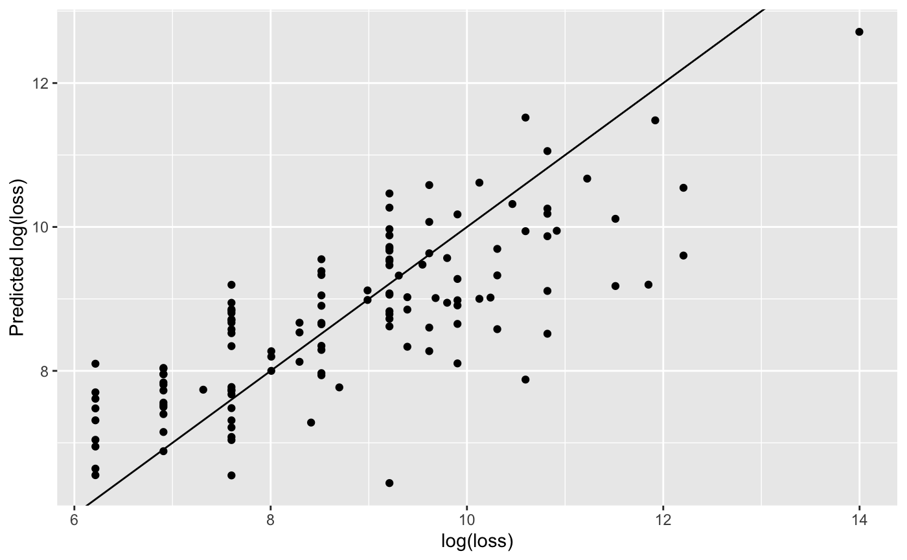

NOAA-Example.RmdTo explore the functions in the TAGAM package, we will use a public storm events database. The data comes from NOAA, and can be accessed through the rnoaa package. Using the storm events data, we will…
library(TAGAM) library(readr) library(rnoaa) library(dplyr) library(tidytext) library(doParallel) library(ggplot2)
As previously mentioned, we will gather the data using the rnoaa package. The following code gathers and combines data from 2000 to 2018.
noaa_data <- do.call(rbind, lapply(2000:2018, function(year) { rnoaa::se_data(year = year, type = "details") }))
For the analysis, we use observations resulting from Thunderstorm Wind that occured in Michigan. We also remove all observations that don’t have an event_narrative. Finally, in order to remove empty values and data entry errors, we only take observations with nchar(damage_property) > 1.
# filter data noaa_subset <- noaa_data %>% filter(event_narrative != "" & nchar(damage_property) > 1 & state == "MICHIGAN" & event_type == "Thunderstorm Wind")
After filtering the data, we see the dollar amounts in noaa_subset$damage_property may contain K, M, or B to represent thousands, millions, or billions of dollars respectively. The following code creates noaa_subset$damage_property_num which contains the numeric value represented in noaa_subset$damage_property. Finally, we take only the observations resulting in positive property loss.
# convert damage_property to numeric value noaa_subset$damage_property_num <- gsub("K", "*10^3", noaa_subset$damage_property) noaa_subset$damage_property_num <- gsub("M", "*10^6", noaa_subset$damage_property_num) noaa_subset$damage_property_num <- gsub("B", "*10^9", noaa_subset$damage_property_num) noaa_subset$damage_property_num <- sapply(noaa_subset$damage_property_num, function(x) { eval(parse(text = x)) }) # select observations with positive property loss noaa_subset <- noaa_subset %>% filter(damage_property_num > 0)
To convert the textual descriptions of the property loss noaa_subset$event_narrative to numeric vectors, we must download and format the word embeddings. Here, we choose to use the 300 dimensional GloVe word embeddings. The formatWordEmbeddings function takes the raw word embeddings matrix and converts them into a named list, where each entry is a numeric vector of length 300. For example, we would use word_embeddings["the"] to extract the numeric vector for the word the.
# download.file("http://nlp.stanford.edu/data/wordvecs/glove.6B.zip", "glove.6B.zip") # unzip("glove.6B.zip") embedding_matrix <- read_table2("glove.6B.300d.txt", col_names = FALSE) word_embeddings <- formatWordEmbeddings(embedding_matrix, normalize = TRUE)
To measure the similarity between two words, we use the cosine similarity between the vector representations of the words. That is, for two words with vector representations \(\bf{a}\) and \(\bf{b}\), respectively, the cosine similarity is defined as, \[\textrm{sim}_{\textrm{cos}} ({\bf a}, {\bf b}) = \frac{{\bf a}\cdot {\bf b}}{\lVert {\bf a}\lVert_2\cdot\lVert{\bf b}\lVert_2}.\] Moreover, for a given phrase, let \(D = ({\bf b}_1, ..., {\bf b}_S)\) where each \({\bf b}_i\), \(i \in \{1, ..., S\}\) is a word in the phrase. Then define the cosine similarity between a word \(\bf a\) and a phrase \(D\) as \[\textrm{sim}_{\textrm{cos}} ({\bf a}, D) = \underset{s=1,...,S}{\max}\left( \textrm{sim}_{\textrm{cos}} ({\bf a}, {\bf b}_s)\right).\]
In this way, we construct a matrix of cosine similarities \(\boldsymbol X _{n\times p_n}\) where \(n\) is the number of observations, \(p_n\) is the number of unique words used. Let \(W\) be the vector of unique words with length \(p_n\), and let \(\boldsymbol D\) be the list of descriptions with length \(n\), where each element in the list is a vector \(D_i\) containing the words used in description \(i\). Then \[X_{ij} = \textrm{sim}_{\textrm{cos}} ({W_j}, D_i) \,\,\,\textrm{ for }\,\,\, i \in \{1,...,n\}, \,j \in \{1,...,p_n\}.\]
Each value in the matrix is now continuous and restricted to \([-1, 1]\).
cs.matrix is used to construct the cosine similarity matrix from the word embeddings. In order to use cs.matrix, the descriptions need to be reformatted into a tibble with columns line and word. This can be done using the tidytext package,
tidy_training <- tibble(line = 1:length(training_raw), text = training_raw) %>% unnest_tokens(word, text) tidy_validation <- tibble(line = 1:length(validation_raw), text = validation_raw) %>% unnest_tokens(word, text)
In addition, we would like to remove words that are not in word_embeddings or words that provide very little meaning to the context. Therefore, we use the following filter to make sure we only have words in word_embeddings and we remove all stop words and words that contain numbers.
tidy_training <- tidy_training %>% filter(word %in% names(word_embeddings) & !word %in% stop_words$word & !grepl("[[:digit:]]", word)) tidy_validation <- tidy_validation %>% filter(word %in% names(word_embeddings) & !word %in% stop_words$word & !grepl("[[:digit:]]", word))
Now we need to choose which words we would like to represent our covariates. The simplest way to choose the words is to use all words in tidy_training. Then the cosine similarities matrices are constructed.
We can use the gam3 function to fit a generalized additive model via a 3 stage approach. gam3 takes arguments similar to gam/bam from the mgcv package, in addition to several arguments from cv.gglasso from the gglasso package.
training_data <- data.frame("y" = y_training, as.matrix(training)) validation_data <- data.frame("y" = y_validation, as.matrix(validation)) m <- 2 k <- 4 terms <- paste("s(", names(training_data)[-1], ", bs = 'ps', ", "m = ", m, ", k = ", k, ")", sep = "") formula <- as.formula(paste("y ~", paste(terms, collapse = " + "))) gam3.mod <- gam3(formula, training_data, lambda.factor = 0.001, gam.function = "bam", discrete = TRUE) #> Starting stage 1 #> lambda.factor changed to 0.00174752840000769 #> Starting stage 2 #> Starting stage 3
validation_data$prediction <- predict(gam3.mod, newdata = validation_data) ggplot(validation_data) + geom_point(aes(x = validation_data$y, y = validation_data$prediction)) #> Warning: Use of `validation_data$y` is discouraged. Use `y` instead. #> Warning: Use of `validation_data$prediction` is discouraged. Use `prediction` #> instead.
